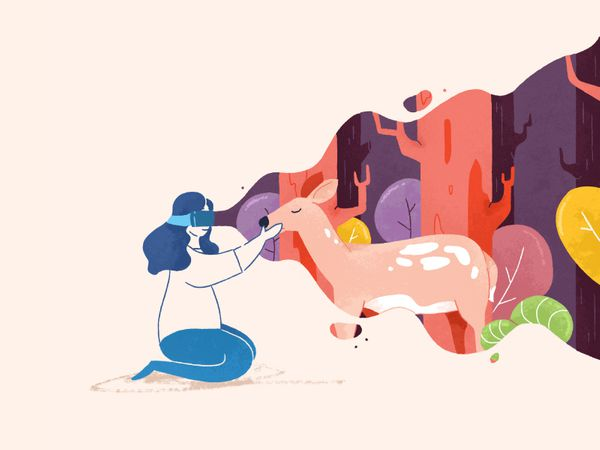

Tutorials Tutorial traffic acquisition di google analytics Review jenis-jenis traffic acquisition dan tutorial implementasinya di google analytics.
 Tutorials Google analytics: channels, source, medium Pembahasan komprehensif mengenai channels, source, medium di Google analytics.
Tutorials Setting channel grouping: panduan teknis pengaturan di google analytics Pengaturan channel grouping pada google analytic, berisi: pengenalan fitur, cara custom setting, hingga memahami rules-nya.
Tutorials gtag.js setup: review dan tutorial cara integrasi dengan AdWords Perbandingan fitur gtag.js, ga.js, dan analytics.js. Disertai bedah fitur dan integrasi dengan AdWords
Resources Kumpulan tools otomatisasi google analytics agar tidak membuat laporan manual setiap hari Kumpulan tips otomatisasi google analytic agar kita sempat mengerjakan task lain.
Tutorials Tata cara migrasi dari classic analytics ke universal analytics Mengenal keunggulan universal analytics dari Google analytic beserta cara bermigrasi ke layanan tersebut. Tidak lupa, dijelaskan pula bagaimana memonitor web dengan layanan tersebut.
Tutorials Panduan setting content grouping di Google Analytics Panduan lengkap cara setting content grouping di Google Analytics supaya data lebih mudah dipahami.
Tutorials Basic need untuk memahami digital analytics data Penjelasan soal users, sessions dan hits pada digital analytic yang ditulis ringkas dan on point.